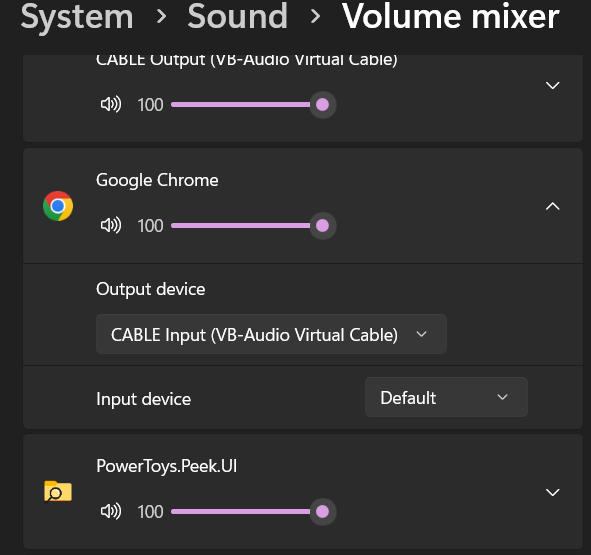
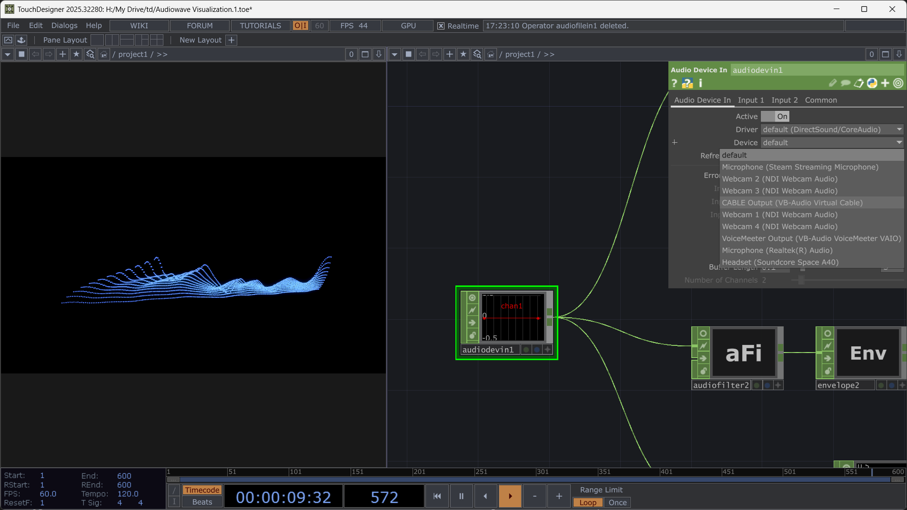

via VB-Cable + Optional OSC
Strudel → VB-Cable → TouchDesigner → Projection
Download VB-Cable from vb-audio.com (it's free, the site looks sketchy but it's legit). Install it. Restart your computer because audio drivers.
In Strudel (or your browser), set your audio output to "VB-Cable Input". This sends all your Strudel sound into the virtual cable instead of your speakers.

If you're using SuperCollider with Strudel, you set SuperCollider's audio output to VB-Cable. Same idea.
In TouchDesigner, add an Audio Device In CHOP. Set its device to "VB-Cable Output" (yes, output—you're receiving what VB-Cable is outputting). Now TD is listening to whatever Strudel is sending.

Use CHOPs to analyze the incoming audio:
Take those CHOP values and drive whatever—geometry transforms, shader parameters, particle systems, whatever you're projecting. The audio becomes control data for your visuals.
You won't hear your audio anymore because it's going to VB-Cable instead of your speakers. Either:
Strudel pattern changes → audio changes → TD receives different frequencies → visuals respond → projection updates on cardboard
immediate responsive chain, everything's live
if you want direct parameter control instead of just audio analysis, use OSC (Open Sound Control). this gives you way more precision.
Strudel → OSC messages → TouchDesigner
You can send OSC from Strudel patterns using .osc() or .ccn() functions:
note("c3 e3 g3").osc("/pattern1")
s("bd sd").ccn(20, saw.range(0,127)).osc()Strudel sends OSC to localhost:57120 by default (SuperCollider) but you can redirect it.
If you're using SC with Strudel, you can forward OSC messages to TD:
~tdAddr = NetAddr("127.0.0.1", 7000); // TD's OSC port
OSCdef(\forwardToTD, { |msg, time, addr, port|
~tdAddr.sendMsg("/strudel", msg[1], msg[2], msg[3]);
}, '/pattern1');Add an OSC In DAT. Set it to listen on port 7000 (or whatever port you chose).
The OSC In DAT outputs messages as table data. Use a DAT to CHOP to convert OSC values into usable channels for your visuals.
You can run audio (VB-Cable) AND OSC simultaneously—audio for reactive stuff, OSC for precise control.
Some people run both—VB-Cable for audio-reactive visuals (responds to overall sound energy, frequencies) and OSC for precise parameter control (specific note values, timing triggers, pattern data). Gives you reactive AND controlled simultaneously.
temporary sculpture meets live pattern meets projected light meets data flow
let me know if you need help with specific OSC message formatting or more complex SC→TD routing